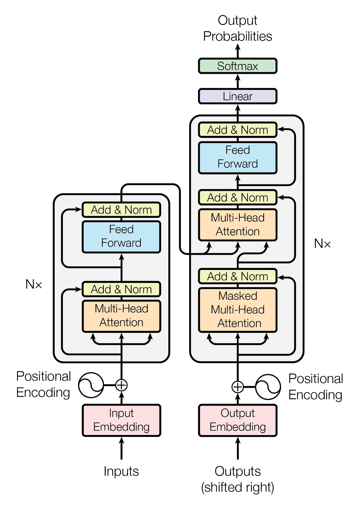

<!-- .slide: id="title" class="section-divider" data-state="is-section-divider" --> # LLMs 0 to 100 Module 4: LLM Architectures --- <!-- .slide: id="review-1" --> ## Review: Module 3 <div class="slide-columns" style="grid-template-columns: repeat(2, 1fr); gap: 30px;"> <div> **Self-Attention as a Learned Lookup** Compare every token (query) against every other token (key), normalize with softmax, and retrieve a weighted sum of values: $$\text{Attention}(Q, K, V) = \text{softmax}\left(\frac{QK^T}{\sqrt{d_k}}\right) V$$ Each output token is a weighted average of value vectors, with weights from query-key compatibility. </div> <div> **The Missing Pieces** - A single attention layer is not a model; it needs embeddings, depth (stacked blocks), and an output head - Positional embeddings inject order into a bag of attention scores - Causal masking ensures autoregressive generation: each token only attends to itself and previous tokens </div> </div> --- <!-- .slide: id="review-2" --> ## Review: From Attention to Models <div class="slide-columns" style="grid-template-columns: repeat(2, 1fr); gap: 30px;"> <div> **What Module 3 gave us** - Queries choose what each token is looking for - Keys describe what each token offers - Values carry the information to copy forward - A causal mask blocks attention to future tokens </div> <div> **What is still missing** - Token IDs must become vectors - Attention must be wrapped in residuals, normalization, and feed-forward networks - Many blocks must stack before logits become text - Architecture choices determine what the model can do </div> </div> --- <!-- .slide: id="divider-rnn" class="section-divider" data-state="is-section-divider" --> # Before Transformers The recurrent era and its limitations --- <!-- .slide: id="rnn-idea" --> ## Recurrent Neural Networks <div class="rnn-rolled"> <svg viewBox="0 0 820 330" role="img" aria-label="A sequence of words processed step by step; the current word enters a shared RNN cell at the bottom, which outputs a hidden state vector that is fed back in for the next word"><defs><marker id="ra" markerWidth="7" markerHeight="7" refX="5" refY="2.5" orient="auto"><path d="M0,0 L5,2.5 L0,5 Z" fill="#f5a623"></path></marker><marker id="rb" markerWidth="7" markerHeight="7" refX="5" refY="2.5" orient="auto"><path d="M0,0 L5,2.5 L0,5 Z" fill="#4a9eff"></path></marker><marker id="rm" markerWidth="7" markerHeight="7" refX="5" refY="2.5" orient="auto"><path d="M0,0 L5,2.5 L0,5 Z" fill="#8892a4"></path></marker></defs><text x="410" y="14" text-anchor="middle" font-size="13" fill="#8892a4">the input sequence — one word per step</text><rect x="60" y="26" width="100" height="44" rx="9" fill="rgba(74,158,255,0.12)" stroke="rgba(74,158,255,0.55)" stroke-width="1.4"></rect><text x="110" y="54" text-anchor="middle" font-size="17" fill="#e8eaf0">The</text><rect x="210" y="26" width="100" height="44" rx="9" fill="rgba(74,158,255,0.12)" stroke="rgba(74,158,255,0.55)" stroke-width="1.4"></rect><text x="260" y="54" text-anchor="middle" font-size="17" fill="#e8eaf0">cat</text><rect x="360" y="26" width="100" height="44" rx="9" fill="rgba(74,158,255,0.25)" stroke="#4a9eff" stroke-width="2"></rect><text x="410" y="54" text-anchor="middle" font-size="17" fill="#e8eaf0">sat</text><rect x="510" y="26" width="100" height="44" rx="9" fill="rgba(74,158,255,0.12)" stroke="rgba(74,158,255,0.55)" stroke-width="1.4"></rect><text x="560" y="54" text-anchor="middle" font-size="17" fill="#e8eaf0">on</text><rect x="660" y="26" width="100" height="44" rx="9" fill="rgba(74,158,255,0.12)" stroke="rgba(74,158,255,0.55)" stroke-width="1.4"></rect><text x="710" y="54" text-anchor="middle" font-size="17" fill="#e8eaf0">mat</text><line x1="164" y1="48" x2="204" y2="48" stroke="#8892a4" stroke-width="2" marker-end="url(#rm)"></line><line x1="314" y1="48" x2="354" y2="48" stroke="#8892a4" stroke-width="2" marker-end="url(#rm)"></line><line x1="464" y1="48" x2="504" y2="48" stroke="#8892a4" stroke-width="2" marker-end="url(#rm)"></line><line x1="614" y1="48" x2="654" y2="48" stroke="#8892a4" stroke-width="2" marker-end="url(#rm)"></line><line x1="410" y1="74" x2="410" y2="118" stroke="#4a9eff" stroke-width="2.5" marker-end="url(#rb)"></line><text x="424" y="100" text-anchor="start" font-size="13" fill="#4a9eff">current word</text><rect x="290" y="124" width="240" height="84" rx="14" fill="rgba(245,166,35,0.12)" stroke="rgba(245,166,35,0.6)" stroke-width="1.6"></rect><text x="410" y="160" text-anchor="middle" font-size="24" fill="#e8eaf0">RNN cell</text><text x="410" y="186" text-anchor="middle" font-size="13" fill="#8892a4">one shared cell, reused every step</text><line x1="410" y1="212" x2="410" y2="248" stroke="#f5a623" stroke-width="2.5" marker-end="url(#ra)"></line><text x="424" y="234" text-anchor="start" font-size="13" fill="#f5a623">new hidden state</text><rect x="262" y="254" width="46" height="36" rx="6" fill="rgba(245,166,35,0.12)" stroke="rgba(245,166,35,0.6)" stroke-width="1.4"></rect><text x="285" y="277" text-anchor="middle" font-size="14" fill="#e8eaf0">0.2</text><rect x="312" y="254" width="46" height="36" rx="6" fill="rgba(245,166,35,0.12)" stroke="rgba(245,166,35,0.6)" stroke-width="1.4"></rect><text x="335" y="277" text-anchor="middle" font-size="14" fill="#e8eaf0">-0.7</text><rect x="362" y="254" width="46" height="36" rx="6" fill="rgba(245,166,35,0.12)" stroke="rgba(245,166,35,0.6)" stroke-width="1.4"></rect><text x="385" y="277" text-anchor="middle" font-size="14" fill="#e8eaf0">0.5</text><rect x="412" y="254" width="46" height="36" rx="6" fill="rgba(245,166,35,0.12)" stroke="rgba(245,166,35,0.6)" stroke-width="1.4"></rect><text x="435" y="277" text-anchor="middle" font-size="14" fill="#e8eaf0">0.1</text><rect x="462" y="254" width="46" height="36" rx="6" fill="rgba(245,166,35,0.12)" stroke="rgba(245,166,35,0.6)" stroke-width="1.4"></rect><text x="485" y="277" text-anchor="middle" font-size="14" fill="#e8eaf0">-0.4</text><rect x="512" y="254" width="46" height="36" rx="6" fill="rgba(245,166,35,0.12)" stroke="rgba(245,166,35,0.6)" stroke-width="1.4"></rect><text x="535" y="277" text-anchor="middle" font-size="14" fill="#e8eaf0">0.9</text><text x="410" y="316" text-anchor="middle" font-size="13" fill="#8892a4">a fixed-size vector, no matter how long the sequence</text><path d="M562 272 C690 272 690 166 536 166" fill="none" stroke="#f5a623" stroke-width="2.5" marker-end="url(#ra)"></path><text x="722" y="210" text-anchor="middle" font-size="13" fill="#f5a623">fed back in with</text><text x="722" y="228" text-anchor="middle" font-size="13" fill="#f5a623">the next word</text></svg> </div> Only one hidden state: - Each step takes the previous hidden state and the current token - It outputs a new hidden state, fed back in for the next token - All history must fit in one fixed-size vector --- <!-- .slide: id="rnn-problems" --> ## The Problems with Recurrence - **Vanishing and exploding gradients:** backprop through time multiplies many weight matrices; the product shrinks to zero or blows up (Module 2's multiplication rule, repeated per step) - **Sequential dependency:** token $t$ waits for tokens $1 \dots t-1$; $n$ tokens take $n$ serial steps, so training cannot parallelize across the sequence - **Fixed-size bottleneck:** all context squeezes through one fixed-dimension vector --- <!-- .slide: id="lstm-gru" --> ## LSTMs and GRUs: Gating Mechanisms <div class="lstm-belt"> <svg viewBox="0 0 940 340" role="img" aria-label="LSTM cell state drawn as a memory line with forget, input, and output gates acting as valves"><defs><marker id="ga" markerWidth="10" markerHeight="10" refX="7" refY="3" orient="auto"><path d="M0,0 L7,3 L0,6 Z" fill="#f5a623"/></marker></defs><text x="470" y="84" text-anchor="middle" font-size="15" fill="#8892a4">cell state — the long-term memory that flows across steps</text><rect x="140" y="104" width="660" height="32" rx="16" fill="rgba(245,166,35,0.10)" stroke="rgba(245,166,35,0.55)" stroke-width="1.5"/><text x="128" y="126" text-anchor="end" font-size="15" fill="#e8eaf0">Cₜ₋₁</text><line x1="800" y1="120" x2="836" y2="120" stroke="#f5a623" stroke-width="2.5" marker-end="url(#ga)"/><text x="846" y="126" text-anchor="start" font-size="15" fill="#e8eaf0">Cₜ</text><circle cx="300" cy="120" r="19" fill="rgba(245,166,35,0.20)" stroke="#f5a623" stroke-width="1.5"/><text x="300" y="129" text-anchor="middle" font-size="22" fill="#f5a623">×</text><circle cx="540" cy="120" r="19" fill="rgba(63,185,80,0.18)" stroke="#3fb950" stroke-width="1.5"/><text x="540" y="130" text-anchor="middle" font-size="26" fill="#3fb950">+</text><rect x="232" y="196" width="136" height="58" rx="10" fill="rgba(231,76,60,0.08)" stroke="rgba(231,76,60,0.6)" stroke-width="1.4"/><text x="300" y="222" text-anchor="middle" font-size="16" fill="#e8eaf0">forget gate</text><text x="300" y="243" text-anchor="middle" font-size="12" fill="#8892a4">what to erase</text><rect x="472" y="196" width="136" height="58" rx="10" fill="rgba(63,185,80,0.08)" stroke="rgba(63,185,80,0.6)" stroke-width="1.4"/><text x="540" y="222" text-anchor="middle" font-size="16" fill="#e8eaf0">input gate</text><text x="540" y="243" text-anchor="middle" font-size="12" fill="#8892a4">what to write</text><rect x="652" y="196" width="136" height="58" rx="10" fill="rgba(74,158,255,0.08)" stroke="rgba(74,158,255,0.6)" stroke-width="1.4"/><text x="720" y="222" text-anchor="middle" font-size="16" fill="#e8eaf0">output gate</text><text x="720" y="243" text-anchor="middle" font-size="12" fill="#8892a4">what to reveal</text><line x1="300" y1="194" x2="300" y2="142" stroke="#f5a623" stroke-width="2" marker-end="url(#ga)"/><line x1="540" y1="194" x2="540" y2="142" stroke="#f5a623" stroke-width="2" marker-end="url(#ga)"/><line x1="720" y1="137" x2="720" y2="194" stroke="#f5a623" stroke-width="2" marker-end="url(#ga)"/><line x1="720" y1="256" x2="720" y2="300" stroke="#f5a623" stroke-width="2" marker-end="url(#ga)"/><text x="720" y="320" text-anchor="middle" font-size="14" fill="#e8eaf0">hₜ — hidden state out</text><text x="140" y="298" text-anchor="start" font-size="13" fill="#8892a4">Each gate is a sigmoid valve:</text><text x="140" y="318" text-anchor="start" font-size="13" fill="#8892a4">0 blocks a value, 1 lets it through.</text></svg> </div> - **Forget gate:** erases part of the old memory - **Input gate:** writes new information - **Output gate:** chooses what to reveal as the hidden state - **GRUs:** simplify to two gates (update, reset) - Gating fixes vanishing gradients but stays **sequential** with a **fixed-size bottleneck** --- <div class="figure-card">  <div class="figure-info"> ## Jürgen Schmidhuber <!-- .element: class="fragment fade-in" --> <div class="fragment fade-in"> ### Long Short-Term Memory (1997) - With Sepp Hochreiter, introduced gated recurrent cells for long-range dependencies - Made gradient flow through long sequences much more reliable - LSTMs became the default sequence model before transformers </div> </div> </div> --- <!-- .slide: id="seq2seq" --> ## Sequence-to-Sequence Learning Encoder-decoder RNNs (Sutskever et al., 2014) use two recurrent networks: - **Encoder:** compresses the input into one fixed-size context vector - **Decoder:** generates the output from that vector - Dominant architecture for machine translation - Bottleneck: long and short sentences compress into the same-size vector - Bahdanau attention (Module 3) fixed this by letting the decoder attend to all encoder states --- <div class="figure-card">  <div class="figure-info"> ## Ilya Sutskever <!-- .element: class="fragment fade-in" --> <div class="fragment fade-in"> ### Sequence to Sequence Learning (2014) - With Oriol Vinyals and Quoc Le, showed encoder-decoder RNNs could translate sequences - The encoder compressed the source sentence into one vector - That bottleneck motivated attention over encoder states </div> </div> </div> --- <div class="figure-card">  <div class="figure-info"> ## Ashish Vaswani <!-- .element: class="fragment fade-in" --> <div class="fragment fade-in"> ### Attention Is All You Need (2017) - Lead author on the original transformer paper - Helped replace recurrence with stacked attention and feed-forward blocks - The architecture became the foundation for modern LLMs </div> </div> </div> --- <!-- .slide: id="attention-is-all-you-need" --> ## Attention Is All You Need (2017) Vaswani et al. removed recurrence entirely. In its place: stacked multi-head self-attention plus feed-forward networks. - **Full parallelism:** training processes every token at once; the causal mask enforces order - **Constant path length:** token 1 and token $n$ interact directly through one attention layer, $O(1)$ instead of $O(n)$ recurrent steps - **No bottleneck:** each layer sees the full sequence; nothing compresses into one vector Each fix answers one RNN limitation from the previous slide. --- <section id="recurrence-anim"> <div class="video-container"> <video class="manim-stepper" data-manim-scene="recurrence-vs-attention" preload="auto"></video> </div> </section> --- <!-- .slide: id="transformer-architecture" --> ## The Transformer Architecture <div class="transformer-figure"> <p></p> <div class="transformer-callouts"> <div><strong>Encoder (left)</strong><span>stacked self-attention and feed-forward layers, fully bidirectional</span></div> <div><strong>Decoder (right)</strong><span>masked self-attention, cross-attention to the encoder, feed-forward</span></div> <div><strong>Every block</strong><span>attention to mix positions, a feed-forward network to transform them, with a residual connection and normalization around each</span></div> <div><strong>This module</strong><span>follows the decoder-only variant that powers modern LLMs</span></div> </div> </div> The paper used the full encoder-decoder. We will follow the same building blocks through a single decoder stack. --- <!-- .slide: id="divider-tokenization" class="section-divider" data-state="is-section-divider" --> # Tokenization What is the atomic unit of a language model? --- <!-- .slide: id="unit-problem" --> ## The Unit Problem What should a language model read? <div class="slide-columns" style="grid-template-columns: repeat(3, 1fr); gap: 25px;"> <div> **Characters** - Tiny vocabulary (~256 bytes) - Very long sequences - Each token carries almost no meaning </div> <div> **Words** - Meaningful units - Vocabulary explodes to hundreds of thousands - Typos and new words become out-of-vocabulary </div> <div> **Subwords** - Frequent words stay whole; rare words split into pieces - "tokenization" → "token" + "ization" - Typos and new coinages stay representable </div> </div> --- <section id="bpe-algorithm"> <h2>Byte-Pair Encoding</h2> <div class="video-container"> <video class="manim-stepper" data-manim-scene="bpe-training" preload="auto"></video> </div> </section> --- <!-- .slide: id="byte-level-bpe" --> ## Byte-Level BPE and the Vocabulary Table <div class="byte-bpe-diagram"> <div class="byte-lane"> <h3>Text</h3> <div class="token-strip"> <span>The</span><span> </span><span>model</span><span> </span><span>reads</span><span> </span><span>bytes</span> </div> </div> <div class="byte-arrow">↓</div> <div class="byte-lane"> <h3>Raw bytes</h3> <div class="byte-grid"> <span>54</span><span>68</span><span>65</span><span>20</span><span>6d</span><span>6f</span><span>64</span><span>65</span><span>6c</span><span>20</span><span>72</span><span>65</span><span>61</span><span>64</span><span>73</span> </div> </div> <div class="byte-arrow">↓</div> <div class="byte-lane"> <h3>Learned token IDs</h3> <div class="token-strip token-strip-accent"> <span>464</span><span>2746</span><span>1100</span><span>9048</span> </div> </div> </div> <div class="vocab-tradeoff"> <div><strong>Small vocabulary</strong><span>longer sequences</span></div> <div><strong>Large vocabulary</strong><span>bigger embedding table</span></div> <div><strong>Byte-level base</strong><span>no true out-of-vocabulary text</span></div> </div> --- <!-- .slide: id="tokenization-practice" --> ## Why Tokenization Matters in Practice <div class="token-practice-grid"> <div class="token-case"> <h3>English prose</h3> <div class="token-strip"><span>the</span><span> cat</span><span> sat</span></div> <p>Frequent pieces stay compact.</p> </div> <div class="token-case"> <h3>Less represented scripts</h3> <div class="token-strip"><span>日</span><span>本</span><span>語</span><span>の</span><span>文</span><span>章</span></div> <p>More pieces can mean higher cost for the same idea.</p> </div> <div class="token-case"> <h3>Strings and numbers</h3> <div class="token-strip"><span>12345</span><span> reverse</span><span> me</span></div> <p>The model sees token IDs, not guaranteed character access.</p> </div> </div> - Tokenized text is a list of integer IDs; each ID selects one embedding row - The transformer sees only vectors, never the original characters - This is why LLMs struggle to reverse strings or count letters --- <!-- .slide: id="side-quest-glitch-tokens" --> ## Side Quest: Glitch Tokens The tokenizer and the model are trained **separately**, and that seam can crack: - A rare string earns a vocabulary entry in the tokenizer's data but rarely appears in the model's training data - Its embedding row gets almost no gradient and stays near random initialization - Classic case: <code> SolidGoldMagikarp</code>, a Reddit username; early GPT models refused it, swapped it, or produced garbage <div class="glitch-example"> <div class="glitch-turn user"><span>Prompt</span>Please repeat the string "SolidGoldMagikarp" back to me.</div> <div class="glitch-turn model"><span>Early GPT</span>"distribute"</div> </div> A real exchange: the model swaps the glitch token for an unrelated word. These **under-trained tokens** (Land and Bartolo, 2024) prove the boundary: the model never sees `S-o-l-i-d-...`, only one token ID and its embedding vector. --- <!-- .slide: id="divider-sampling" class="section-divider" data-state="is-section-divider" --> # Generating Text From logits to tokens: decoding strategies --- <!-- .slide: id="logits-to-text" --> ## From Logits to Text A forward pass produces a raw score (a **logit** $z$) for every token in the vocabulary. **Softmax** turns those scores into probabilities that sum to one: $$p_{\textcolor{#f5a623}{i}} = \frac{e^{z_{\textcolor{#f5a623}{i}}}}{\sum_{\textcolor{#4a9eff}{j}} e^{z_{\textcolor{#4a9eff}{j}}}}$$ <div class="prompt-line"><span class="pl-text">The capital of France is</span><span class="pl-next">next token?</span></div> <div class="logit-index-visual"> <div class="lv-num"><b>i</b> — the one token whose probability we are computing (numerator)</div> <div class="vocab-stack"> <div class="vocab-row"> <span class="vtok i">Paris<small>z = 8.2</small></span> <span class="vtok">London<small>5.1</small></span> <span class="vtok">Lyon<small>4.7</small></span> <span class="vtok">city<small>4.0</small></span> <span class="vtok">the<small>3.2</small></span> <span class="vtok">of<small>2.5</small></span> <span class="vtok more">…</span> </div> <div class="vocab-bracket"></div> </div> <div class="lv-den"><b>j</b> — runs over <strong>every</strong> token in the vocabulary; the sum normalizes (denominator)</div> </div> --- <!-- .slide: id="greedy-decoding" --> ## Greedy Decoding Always pick the token with the highest probability: $$\text{token}_t = \arg\max_i p_i$$ - Simple, deterministic, fast - Produces repetitive, flat text; never explores lower-probability continuations - Once in a loop ("the the the"), it stays there --- <!-- .slide: id="temperature" --> ## Temperature Scale the logits by $\textcolor{#f5a623}{T}$ before softmax to control randomness: $$p_i = \frac{e^{z_i / \textcolor{#f5a623}{T}}}{\sum_j e^{z_j / \textcolor{#f5a623}{T}}}$$ <div class="temp-regimes"> <div class="temp-card"><b>T < 1</b><span>sharper</span><p>conservative; sticks to the highest-probability tokens</p></div> <div class="temp-card"><b>T = 1</b><span>original</span><p>the model's raw distribution, unchanged</p></div> <div class="temp-card"><b>T > 1</b><span>flatter</span><p>more random and creative; unlikely tokens gain probability</p></div> </div> The simplest inference-time control over randomness. --- <!-- .slide: id="topk-topp" --> ## Top-k and Top-p (Nucleus) Sampling Temperature alone can still sample implausible tokens. Two truncation fixes: <div class="slide-columns" style="grid-template-columns: repeat(2, 1fr); gap: 30px;"> <div> **Top-k** - Keep the $k$ most likely tokens, renormalize, sample - $k = 50$ is common - Fixed cutoff: too strict for peaked distributions, too loose for flat ones </div> <div> **Top-p (nucleus)** - Keep the smallest set with cumulative probability > $p$ - Peaked distribution: ~5 tokens. Flat: ~200 - Adapts to distribution shape </div> </div> In practice: scale by temperature, then truncate, then sample. --- <section id="sampling-explorer"> <h2>Temperature, Top-k, Top-p on One Distribution</h2> <div class="interactive-host" data-widget="samplingExplorer"></div> </section> --- <section id="sampling-anim"> <div class="video-container"> <video class="manim-stepper" data-manim-scene="sampling-demo" preload="auto"></video> </div> </section> --- <!-- .slide: id="beam-search" --> ## Beam Search <div class="beam-tree"> <svg viewBox="0 0 880 320" role="img" aria-label="Beam search drawn as a left-to-right tree with beam width 2"> <path d="M130 165 C215 165 215 85 300 85" fill="none" stroke="#f5a623" stroke-width="2.5"/> <path d="M130 165 C215 165 215 175 300 175" fill="none" stroke="#f5a623" stroke-width="2.5"/> <path d="M130 165 C215 165 215 265 300 265" fill="none" stroke="#5a6478" stroke-width="1.5" stroke-dasharray="5 5"/> <path d="M430 85 C510 85 510 55 590 55" fill="none" stroke="#f5a623" stroke-width="2.5"/> <path d="M430 85 C510 85 510 120 590 120" fill="none" stroke="#5a6478" stroke-width="1.5" stroke-dasharray="5 5"/> <path d="M430 175 C510 175 510 210 590 210" fill="none" stroke="#f5a623" stroke-width="2.5"/> <path d="M430 175 C510 175 510 275 590 275" fill="none" stroke="#5a6478" stroke-width="1.5" stroke-dasharray="5 5"/> <rect x="20" y="145" width="110" height="40" rx="8" fill="rgba(74,158,255,0.12)" stroke="rgba(74,158,255,0.6)" stroke-width="1.5"/> <text x="75" y="170" text-anchor="middle" font-size="16" fill="#e8eaf0">The</text> <rect x="300" y="65" width="130" height="40" rx="8" fill="rgba(245,166,35,0.14)" stroke="rgba(245,166,35,0.65)" stroke-width="1.5"/> <text x="365" y="90" text-anchor="middle" font-size="15" fill="#e8eaf0">cat 0.42</text> <rect x="300" y="155" width="130" height="40" rx="8" fill="rgba(245,166,35,0.14)" stroke="rgba(245,166,35,0.65)" stroke-width="1.5"/> <text x="365" y="180" text-anchor="middle" font-size="15" fill="#e8eaf0">dog 0.31</text> <rect x="300" y="245" width="130" height="40" rx="8" fill="rgba(136,146,164,0.06)" stroke="rgba(136,146,164,0.30)" stroke-width="1.5"/> <text x="365" y="270" text-anchor="middle" font-size="15" fill="#8892a4">car 0.08</text> <rect x="590" y="35" width="150" height="40" rx="8" fill="rgba(245,166,35,0.14)" stroke="rgba(245,166,35,0.65)" stroke-width="1.5"/> <text x="665" y="60" text-anchor="middle" font-size="15" fill="#e8eaf0">cat sat 0.18</text> <rect x="590" y="100" width="150" height="40" rx="8" fill="rgba(136,146,164,0.06)" stroke="rgba(136,146,164,0.30)" stroke-width="1.5"/> <text x="665" y="125" text-anchor="middle" font-size="15" fill="#8892a4">cat ran 0.05</text> <rect x="590" y="190" width="150" height="40" rx="8" fill="rgba(245,166,35,0.14)" stroke="rgba(245,166,35,0.65)" stroke-width="1.5"/> <text x="665" y="215" text-anchor="middle" font-size="15" fill="#e8eaf0">dog ran 0.15</text> <rect x="590" y="255" width="150" height="40" rx="8" fill="rgba(136,146,164,0.06)" stroke="rgba(136,146,164,0.30)" stroke-width="1.5"/> <text x="665" y="280" text-anchor="middle" font-size="15" fill="#8892a4">dog the 0.04</text> <text x="752" y="60" text-anchor="start" font-size="13" fill="#f5a623">beam 1</text> <text x="752" y="215" text-anchor="start" font-size="13" fill="#f5a623">beam 2</text> <text x="75" y="225" text-anchor="middle" font-size="12" fill="#8892a4">start</text> <text x="365" y="35" text-anchor="middle" font-size="12" fill="#8892a4">step 1</text> <text x="665" y="22" text-anchor="middle" font-size="12" fill="#8892a4">step 2</text> </svg> </div> Keep the $b$ best partial sequences at every step ($b = 2$ here). Solid orange paths survive; dashed branches were scored and pruned. - **Good for:** translation and other tasks with one correct answer - **Bad for:** open-ended generation; the most likely sequence is usually vacuous or repetitive Next: follow a full prompt through the stack that produces these distributions. --- <!-- .slide: id="divider-block" class="section-divider" data-state="is-section-divider" --> # Putting It All Together Following one prompt through a decoder-only transformer --- <!-- .slide: id="decoder-only-arch" --> ## The Decoder-Only Architecture <div class="decoder-svg"> <svg viewBox="0 0 560 463" role="img" aria-label="Decoder-only transformer stack from raw text up to next-token probabilities, with residual connections around each sub-layer"><rect x="98" y="141" width="304" height="181" rx="10" fill="rgba(74,158,255,0.03)" stroke="rgba(74,158,255,0.5)" stroke-width="1.2" stroke-dasharray="5 4"></rect><defs><marker id="da" markerWidth="7" markerHeight="7" refX="5" refY="2.5" orient="auto"><path d="M0,0 L5,2.5 L0,5 Z" fill="#f5a623"></path></marker><marker id="da2" markerWidth="7" markerHeight="7" refX="5" refY="2.5" orient="auto"><path d="M0,0 L5,2.5 L0,5 Z" fill="#4a9eff"></path></marker></defs><rect x="120" y="12" width="260" height="28" rx="8" fill="rgba(245,166,35,0.12)" stroke="rgba(245,166,35,0.55)" stroke-width="1.3"></rect><text x="250" y="30" text-anchor="middle" font-size="14" fill="#e8eaf0">Next-token probabilities</text><line x1="250" y1="55" x2="250" y2="41" stroke="#f5a623" stroke-width="2" marker-end="url(#da)"></line><rect x="120" y="55" width="260" height="28" rx="8" fill="rgba(74,158,255,0.10)" stroke="rgba(74,158,255,0.40)" stroke-width="1.3"></rect><text x="250" y="73" text-anchor="middle" font-size="14" fill="#e8eaf0">Softmax</text><line x1="250" y1="98" x2="250" y2="84" stroke="#f5a623" stroke-width="2" marker-end="url(#da)"></line><rect x="120" y="98" width="260" height="28" rx="8" fill="rgba(74,158,255,0.10)" stroke="rgba(74,158,255,0.40)" stroke-width="1.3"></rect><text x="250" y="110" text-anchor="middle" font-size="14" fill="#e8eaf0">Unembedding</text><text x="250" y="124" text-anchor="middle" font-size="10" fill="#8892a4">linear: model dim → vocabulary</text><line x1="250" y1="141" x2="250" y2="127" stroke="#f5a623" stroke-width="2" marker-end="url(#da)"></line><rect x="120" y="153" width="260" height="28" rx="8" fill="rgba(136,146,164,0.10)" stroke="rgba(136,146,164,0.45)" stroke-width="1.3"></rect><text x="250" y="171" text-anchor="middle" font-size="12.5" fill="#e8eaf0">Add & Norm</text><line x1="250" y1="196" x2="250" y2="182" stroke="#f5a623" stroke-width="2" marker-end="url(#da)"></line><rect x="120" y="196" width="260" height="28" rx="8" fill="rgba(136,146,164,0.10)" stroke="rgba(136,146,164,0.45)" stroke-width="1.3"></rect><text x="250" y="214" text-anchor="middle" font-size="12.5" fill="#e8eaf0">Feed-Forward Network</text><line x1="250" y1="239" x2="250" y2="225" stroke="#f5a623" stroke-width="2" marker-end="url(#da)"></line><rect x="120" y="239" width="260" height="28" rx="8" fill="rgba(136,146,164,0.10)" stroke="rgba(136,146,164,0.45)" stroke-width="1.3"></rect><text x="250" y="257" text-anchor="middle" font-size="12.5" fill="#e8eaf0">Add & Norm</text><line x1="250" y1="282" x2="250" y2="268" stroke="#f5a623" stroke-width="2" marker-end="url(#da)"></line><rect x="120" y="282" width="260" height="28" rx="8" fill="rgba(136,146,164,0.10)" stroke="rgba(136,146,164,0.45)" stroke-width="1.3"></rect><text x="250" y="300" text-anchor="middle" font-size="12.5" fill="#e8eaf0">Masked Multi-Head Self-Attention</text><text x="406" y="231.5" text-anchor="start" font-size="15" fill="#f5a623">N×</text><path d="M250 317 L104 317 L104 253 L119 253" fill="none" stroke="#4a9eff" stroke-width="1.6" marker-end="url(#da2)"></path><path d="M250 231 L104 231 L104 167 L119 167" fill="none" stroke="#4a9eff" stroke-width="1.6" marker-end="url(#da2)"></path><text x="100" y="285.5" text-anchor="end" font-size="10" fill="#4a9eff">residual</text><line x1="250" y1="337" x2="250" y2="323" stroke="#f5a623" stroke-width="2" marker-end="url(#da)"></line><rect x="120" y="337" width="260" height="28" rx="8" fill="rgba(74,158,255,0.10)" stroke="rgba(74,158,255,0.40)" stroke-width="1.3"></rect><text x="250" y="355" text-anchor="middle" font-size="14" fill="#e8eaf0">Positional encoding</text><line x1="250" y1="380" x2="250" y2="366" stroke="#f5a623" stroke-width="2" marker-end="url(#da)"></line><rect x="120" y="380" width="260" height="28" rx="8" fill="rgba(74,158,255,0.10)" stroke="rgba(74,158,255,0.40)" stroke-width="1.3"></rect><text x="250" y="392" text-anchor="middle" font-size="14" fill="#e8eaf0">Tokenize</text><text x="250" y="406" text-anchor="middle" font-size="10" fill="#8892a4">text → token vectors</text><line x1="250" y1="423" x2="250" y2="409" stroke="#f5a623" stroke-width="2" marker-end="url(#da)"></line><rect x="120" y="423" width="260" height="28" rx="8" fill="rgba(245,166,35,0.12)" stroke="rgba(245,166,35,0.55)" stroke-width="1.3"></rect><text x="250" y="441" text-anchor="middle" font-size="14" fill="#e8eaf0">The capital of France</text></svg> </div> Bottom to top: tokenize and embed, add position, $N$ identical blocks refine the vectors (each sub-layer wrapped in a blue **residual connection**), then the **unembedding** scores every token. --- <!-- .slide: id="embedding-layer" --> ## Step 1: Words to Vectors <div class="decoder-flow active-embedding"> <div class="flow-node embedding">word → vector</div> <div class="flow-node position">add position</div> <div class="flow-node attention">multi-head attention</div> <div class="flow-node ffn">feed-forward network</div> <div class="flow-node repeat">repeat blocks</div> <div class="flow-node sampling">sampling</div> </div> <div class="embedding-visual"> <div class="word-card">The capital of France</div> <div class="pipe-arrow">→</div> <div class="token-strip"><span>The</span><span> capital</span><span> of</span><span> France</span></div> <div class="pipe-arrow">→</div> <div class="id-strip"><span>464</span><span>3139</span><span>286</span><span>4881</span></div> <div class="pipe-arrow">→</div> <div class="embedding-table"> <div class="et-title">embedding matrix<br><span>one learned vector per row</span></div> <div class="et-row"><span class="et-id">row 464</span><span class="et-vec">[ 0.14 -0.22 0.05 0.61 … ]</span></div> <div class="et-row"><span class="et-id">row 3139</span><span class="et-vec">[ -0.31 0.47 0.18 -0.09 … ]</span></div> <div class="et-row"><span class="et-id">row 286</span><span class="et-vec">[ 0.02 0.33 -0.27 0.40 … ]</span></div> <div class="et-row accent"><span class="et-id">row 4881</span><span class="et-vec">[ 0.55 -0.12 0.29 -0.63 … ]</span></div> </div> </div> Tokenize, then look up each ID in the embedding matrix. From here on, the transformer sees vectors, not text. <div class="note"> Row $k$ of the **embedding matrix** is the learned vector for token $k$. Lookup is pure indexing: ID 4881 ("France") selects row 4881, and that row **is** the token's vector. </div> --- <section id="embedding-anim"> <div class="video-container"> <video class="manim-stepper" data-manim-scene="embedding-lookup" preload="auto"></video> </div> </section> --- <!-- .slide: id="positional-encoding" --> ## Step 2: Add Position <div class="decoder-flow active-position"> <div class="flow-node embedding">word → vector</div> <div class="flow-node position">add position</div> <div class="flow-node attention">multi-head attention</div> <div class="flow-node ffn">feed-forward network</div> <div class="flow-node repeat">repeat blocks</div> <div class="flow-node sampling">sampling</div> </div> <div class="position-visual"> <div class="pos-column"> <h3>Token vectors</h3> <div class="vector-pill">The</div> <div class="vector-pill">capital</div> <div class="vector-pill">of</div> <div class="vector-pill">France</div> </div> <div class="plus-column">+</div> <div class="pos-column"> <h3>Position vectors</h3> <div class="vector-pill muted">pos 0</div> <div class="vector-pill muted">pos 1</div> <div class="vector-pill muted">pos 2</div> <div class="vector-pill muted">pos 3</div> </div> <div class="plus-column">=</div> <div class="pos-column result"> <h3>Input to block 1</h3> <div class="vector-pill accent">The @ 0</div> <div class="vector-pill accent">capital @ 1</div> <div class="vector-pill accent">of @ 2</div> <div class="vector-pill accent">France @ 3</div> </div> </div> Without position information, attention is order-blind: the same tokens in a different order would look identical. --- <!-- .slide: id="attention-sublayer" --> ## Step 3: Multi-Head Attention <div class="decoder-flow active-attention"> <div class="flow-node embedding">word → vector</div> <div class="flow-node position">add position</div> <div class="flow-node attention">multi-head attention</div> <div class="flow-node ffn">feed-forward network</div> <div class="flow-node repeat">repeat blocks</div> <div class="flow-node sampling">sampling</div> </div> $$\text{Attention}(Q,K,V) = \text{softmax}\left(\frac{QK^{\top}}{\sqrt{d_k}}\right)V$$ <div class="attention-detail"> <div class="causal-matrix"> <div></div><div>The</div><div>capital</div><div>of</div><div>France</div> <div>The</div><span class="on"></span><span></span><span></span><span></span> <div>capital</div><span class="on"></span><span class="on"></span><span></span><span></span> <div>of</div><span class="on"></span><span class="on"></span><span class="on"></span><span></span> <div>France</div><span class="on"></span><span class="on"></span><span class="on"></span><span class="on"></span> </div> <div class="attention-steps"> <ul> <li>Each token is projected into a <strong>query</strong>, a <strong>key</strong>, and a <strong>value</strong></li> <li>Score every query against every key, then scale by the square root of the head dimension</li> <li>The <strong>causal mask</strong> keeps only the lower triangle, so a token never reads from the future</li> <li>Softmax the scores into weights, then output the <strong>weighted sum of values</strong></li> <li>Several <strong>heads</strong> run in parallel, each learning a different kind of lookup</li> </ul> </div> </div> Attention is the only sub-layer where information moves between positions. --- <!-- .slide: id="ffn-sublayer" --> ## Step 4: Feed-Forward Network <div class="decoder-flow active-ffn"> <div class="flow-node embedding">word → vector</div> <div class="flow-node position">add position</div> <div class="flow-node attention">multi-head attention</div> <div class="flow-node ffn">feed-forward network</div> <div class="flow-node repeat">repeat blocks</div> <div class="flow-node sampling">sampling</div> </div> $$\text{FFN}(x) = W_2 \operatorname{ReLU}(W_1 x), \qquad d \rightarrow 4d \rightarrow d$$ - Applied to **each token independently**; never mixes positions - Project up to $4d$, apply **ReLU**, project back down (GPT-2 uses GELU, a smooth variant) - Holds much of the model's stored knowledge --- <section id="ffn-anim"> <div class="video-container"> <video class="manim-stepper" data-manim-scene="ffn-expand" preload="auto"></video> </div> </section> --- <!-- .slide: id="stacking-and-head" --> ## Step 5: Repeat the Block <div class="decoder-flow active-repeat"> <div class="flow-node embedding">word → vector</div> <div class="flow-node position">add position</div> <div class="flow-node attention">multi-head attention</div> <div class="flow-node ffn">feed-forward network</div> <div class="flow-node repeat">repeat blocks</div> <div class="flow-node sampling">sampling</div> </div> <div class="stack-visual"> <div class="stack-block">block 1<br><span>attention + FFN</span></div> <div class="stack-block">block 2<br><span>attention + FFN</span></div> <div class="stack-block">block 3<br><span>attention + FFN</span></div> <div class="stack-ellipsis">...</div> <div class="stack-block accent">block N<br><span>attention + FFN</span></div> </div> Depth lets later blocks build on earlier features. GPT-2 small repeats this decoder block 12 times. Each block reuses the same shape but learns its own weights. --- <!-- .slide: id="norm-and-residual" --> ## Normalization: Keep the Scale Stable Normalization rescales each token vector to a stable range. This keeps a deep stack trainable. <div class="norm-visual"> <div class="norm-lane"> <h3>LayerNorm</h3> <p>Subtract the mean, divide by the standard deviation, apply a learned gain and bias.</p> </div> <div class="norm-lane"> <h3>RMSNorm</h3> <p>Divide by the root-mean-square only. Cheaper, works as well.</p> </div> </div> Placement: the original transformer normalized **after** each sub-layer (post-norm). Modern decoders normalize **before** (pre-norm), which trains more stably at depth. --- <section id="norm-anim"> <div class="video-container"> <video class="manim-stepper" data-manim-scene="norm-demo" preload="auto"></video> </div> </section> --- <!-- .slide: id="sampling-step" --> ## Step 6: Sampling <div class="decoder-flow active-sampling"> <div class="flow-node embedding">word → vector</div> <div class="flow-node position">add position</div> <div class="flow-node attention">multi-head attention</div> <div class="flow-node ffn">feed-forward network</div> <div class="flow-node repeat">repeat blocks</div> <div class="flow-node sampling">sampling</div> </div> <div class="softmax-visual"> <div class="matrix-card">last token vector<br><strong>France</strong></div> <div class="pipe-arrow">→</div> <div class="logit-bars"> <div><span>Paris</span><b style="height: 120px;"></b></div> <div><span>London</span><b style="height: 40px;"></b></div> <div><span>city</span><b style="height: 64px;"></b></div> <div><span>capital</span><b style="height: 52px;"></b></div> </div> <div class="pipe-arrow">→</div> <div class="matrix-card accent">sample<br><strong>next token</strong></div> </div> - The **unembedding** (language-modeling head) maps the final vector to one score per vocabulary token; the mirror of the embedding lookup - Softmax turns scores into the next-token distribution - A decoding strategy (greedy, temperature, top-k, top-p) picks the token - The token is appended and fed back in --- <!-- .slide: id="residual-stream" --> ## The Residual Stream View Every sub-layer reads the current vector, computes an update, and **adds** it back: <div class="formula-card">output = input + sub-layer(norm(input))</div> - Blocks only add; the original embedding is never overwritten - Prompt information stays available many layers later - Gradients flow back through the addition without decaying - This "residual stream" is the central object in mechanistic interpretability --- <section id="residual-anim"> <div class="video-container"> <video class="manim-stepper" data-manim-scene="residual-stream" preload="auto"></video> </div> </section> --- <!-- .slide: id="side-quest-induction-heads" --> ## Side Quest: Induction Heads **Induction heads** (Olsson et al., 2022) implement copy-and-continue: - See `[A] [B] ... [A]`, predict `[B]` - The head finds an earlier occurrence of the current token and predicts what followed it, with no weight updates - A core mechanism behind few-shot (in-context) learning at scale --- <!-- .slide: id="divider-beyond" class="section-divider" data-state="is-section-divider" --> # Beyond the Vanilla Transformer Modern blocks, MoE, and sub-quadratic alternatives --- <!-- .slide: id="modern-block" --> ## The Modern Block: 2017 vs Llama-Style <div class="slide-columns" style="grid-template-columns: repeat(2, 1fr); gap: 30px;"> <div> **Original Transformer (2017)** - LayerNorm - ReLU activation in FFN - Sinusoidal positional embeddings - Post-norm (normalize after sub-layer) - Bias terms in all linear layers </div> <div> **Modern Llama-Style** - RMSNorm (simpler, faster) - SwiGLU activation (smoother, better gradients) - RoPE (rotary positional embeddings, callback to Module 3) - Pre-norm (normalize before sub-layer) - **Dropped bias terms** in linear layers (saves parameters) </div> </div> Mostly independent changes; together they make training more stable and efficient. --- <!-- .slide: id="moe" --> ## Mixture of Experts <div class="moe-diagram"> <div class="router-box">router<br><span>top-k experts per token</span></div> <div class="expert-grid"> <div class="expert active">expert 3<br><span>GPU active</span></div> <div class="expert">expert 8<br><span>CPU or cold GPU</span></div> <div class="expert active">expert 17<br><span>GPU active</span></div> <div class="expert">expert 42<br><span>CPU or cold GPU</span></div> </div> </div> $$\text{MoE}(\mathbf{x}) = \sum_{i=1}^{E} g(\mathbf{x})_i \cdot \text{FFN}_i(\mathbf{x})$$ - $g(\mathbf{x})$ is the router: a sparse gate, nonzero only for the top-$k$ experts - Sparse activation buys far more parameters at roughly the same compute per token - Serving trade-off: active experts need fast GPU access; inactive ones can sit in CPU memory or on other devices --- <!-- .slide: id="sub-quadratic" --> ## Sub-Quadratic Alternatives Attention is $O(n^2)$ in sequence length; the bottleneck for long contexts. Alternatives under active research: - **State-space models** (Mamba): recurrent update with input-dependent gates; linear in length, fixed-size state - **Linear attention:** kernelize the softmax; no $n \times n$ matrix - **RWKV:** recurrent update with linear attention-like weights - **Hybrids** (Jamba): attention layers for short-range precision, Mamba layers for long-range compression The transformer still dominates; the $O(n^2)$ cost keeps the search alive. --- <!-- .slide: id="divider-families" class="section-divider" data-state="is-section-divider" --> # Three Architectural Families Encoder-decoder, encoder-only, and decoder-only --- <!-- .slide: id="encoder-decoder" --> ## Family 1: Encoder-Decoder <div class="encoder-decoder-layout"> <div> <p>The original transformer has two stacks: an encoder for the input and a decoder for the output.</p> <div class="family-grid"> <div><strong>Encoder</strong><span>bidirectional self-attention over the source</span></div> <div><strong>Decoder</strong><span>causal self-attention plus cross-attention to encoder states</span></div> <div><strong>Best fit</strong><span>translation, summarization, and other input-output sequence tasks</span></div> <div><strong>Examples</strong><span>T5 and BART keep separate input understanding and output generation</span></div> </div> </div> </div> --- <!-- .slide: id="encoder-only" --> ## Family 2: Encoder-Only - Bidirectional attention, no causal mask, no decoder - Trained with **masked language modeling** (Module 5): hide tokens, predict them from both sides $$\text{output}_i = f(\mathbf{x}_1, \dots, \mathbf{x}_n) \quad \text{for all } i$$ - Produces representations, not generations: classification, embeddings, retrieval, named-entity recognition - BERT (Devlin et al., 2018) made this dominant for "understanding" tasks; RoBERTa improved the recipe, same architecture --- <!-- .slide: id="decoder-only" --> ## Family 3: Decoder-Only - Causal masking, autoregressive next-token prediction - GPT (Radford et al., 2018), GPT-2, GPT-3, and the Llama lineage share this design $$\text{output}_t = f(\mathbf{x}_1, \dots, \mathbf{x}_t)$$ Why it won for LLMs: - One stack, simple, scales cleanly - Next-token objective: dense training signal at every position - Any task phrases as text completion; no task-specific heads - In-context and few-shot learning emerge at scale --- <div class="figure-card">  <div class="figure-info"> ## Alec Radford <!-- .element: class="fragment fade-in" --> <div class="fragment fade-in"> ### GPT and GPT-2 (2018-2019) - Showed that autoregressive pretraining could produce general-purpose text models - GPT-2 demonstrated coherent long-form generation from scale and data - The decoder-only stack became the dominant LLM design </div> </div> </div> --- <!-- .slide: id="honest-tradeoffs" --> ## The Honest Trade-offs Decoder-only won on generality and scaling, not every axis: - **Encoder-only:** faster for embeddings, retrieval, classification - **Encoder-decoder:** strong when input and output are distinct (translation); bidirectional input, autoregressive output - **Decoder-only:** best for open-ended tasks and one-model-for-everything prompting; the price is phrasing every task as completion Pick by problem, not by fashion. --- <!-- .slide: id="divider-exercise" class="section-divider" data-state="is-section-divider" --> # Exercise Assemble GPT-2 and Generate Text --- <!-- .slide: id="exercise-run" --> ## Running the Exercise Open `module_04_architectures/exercise.py`, the only file you edit, and fill in the `NotImplementedError` lines. Everything already written for you lives in `src/`. Run after each step. <!-- .element: class="text-lg" --> ```bash # Run every step; each is tagged CORRECT, INCORRECT, or INCOMPLETE cd exercises uv run python module_04_architectures/src/main.py # Run a single step (1-6) uv run python module_04_architectures/src/main.py --step 3 ``` Step 4 loads the real GPT-2 weights into your model and saves a plot of next-token probabilities to `output/`. The first run downloads the weights from HuggingFace. <!-- .element: class="text-lg" style="margin-top: 15px;" --> --- <!-- .slide: id="exercise-results" --> ## Reading the Results For each step the runner prints what your code produced (token IDs, shapes, generated text), then runs the step's **tests** from `tests/`. Each test calls your code on small inputs whose correct answer is known. <!-- .element: class="text-lg" --> - **CORRECT**: every test for the step passed - **INCORRECT**: your code ran but a test failed; the expected and actual values are printed beneath - **INCOMPLETE**: the function still raises `NotImplementedError` When a step relies on other layers, its tests replace them with simple stand-ins, so each step is judged on its own code. Steps 4 and 5 also check your work against Hugging Face's GPT-2. <!-- .element: class="text-lg" style="margin-top: 15px;" --> --- <section id="exercise-results-example"> <h2>What an INCORRECT Step Looks Like</h2> <div class="content" style="justify-content: center;"> <div class="terminal-output" style="max-width: 920px;"> <div class="terminal-bar"> <span class="terminal-dot red"></span> <span class="terminal-dot yellow"></span> <span class="terminal-dot green"></span> <span class="terminal-title">uv run python module_04_architectures/src/main.py --step 3</span> </div> <div class="terminal-body"> <pre class="terminal-pre"><span class="header">=== Step 3: TransformerBlock.forward() ===</span> <span class="t-fail">INCORRECT</span> Input (1, 5, 768) -> output (1, 5, 768) Parameters: 7,087,872 per block, 4,722,432 of them in the FFN <span class="success">CORRECT</span> keeps the shape: (2, 5, 8) in gives (2, 5, 8) out <span class="t-fail">INCORRECT</span> adds each sub-layer back to its input: attn(x)=2x, ffn(x)=10x turn x=1 into 33 expected 33 got 20 (20 means no residual at all: add x back after each sub-layer) <span class="t-fail">INCORRECT</span> normalizes before each sub-layer: x + attn(ln1(x)), then x + ffn(ln2(x)) largest difference from the reference is 3.5097</pre> </div> </div> <p class="text-lg terminal-caption">Here <code>TransformerBlock.forward()</code> dropped both residual connections (<code>x = self.attn(self.ln1(x))</code>). The shapes still match, so nothing crashes. The test's stand-in layers keep the arithmetic readable: 2 × 10 = 20, where adding x back each time gives 33.</p> </div> </section> --- <!-- .slide: id="exercise-overview" --> ## Exercise: Assemble GPT-2 Build the full decoder-only transformer from scratch, load pretrained weights, and generate text with different decoding strategies. <!-- .element: class="text-lg" --> <div class="slide-columns" style="grid-template-columns: repeat(2, 1fr); gap: 30px;"> <div> **Model assembly (steps 1 to 4)** Implement embeddings, the FFN, a transformer block, and the full stack. The runner then loads the real GPT-2 weights into your model. </div> <div> **Generation (steps 5 and 6)** Implement greedy decoding and the temperature scaling for top-k sampling. Observe how decoding strategy shapes the output. </div> </div> Each function is mostly written, so you only fill in the missing lines. Every step has its own tests in `tests/`. <!-- .element: class="text-lg" style="margin-top: 10px;" --> --- <!-- .slide: id="exercise-step1-code" --> ## Step 1: EmbeddingLayer.forward() The layer holds two tables, `self.token_embed` (one row per vocabulary token) and `self.pos_embed` (one row per position). Inside `forward(self, token_ids)`: <!-- .element: class="text-lg" style="margin-bottom: 10px;" --> ```python b, t = token_ids.size() # Create a tensor [0, 1, 2, ..., t-1] for the positions in this batch. position = torch.arange(t, dtype=torch.long, device=token_ids.device) # Broadcast so every row in the batch gets the same position indices. position = position.unsqueeze(0).expand(b, t) # TODO: Look up token embeddings and position embeddings, then add them. raise NotImplementedError("TODO: token embedding lookup + positional embedding") ``` <div class="fragment hint-box"> **Hint:** there are two embedding tables on `self` (one for tokens, one for positions); call each on its index tensor and add the two results. </div> <div class="fragment note"> **Answer:** ```python return self.token_embed(token_ids) + self.pos_embed(position) ``` </div> --- <!-- .slide: id="exercise-step2-code" --> ## Step 2: FeedForward.forward() ```python def forward(self, x: torch.Tensor) -> torch.Tensor: """Apply the two-layer FFN with GELU nonlinearity. GPT-2 was trained with the tanh approximation of GELU, so we pass approximate="tanh" to reproduce the pretrained model exactly. The default (exact) GELU is a slightly different curve and shifts the logits enough to notice. Args: x: Input tensor, shape (batch_size, seq_len, d_model). Returns: Output tensor, shape (batch_size, seq_len, d_model). """ # TODO: Apply fc1, then F.gelu(..., approximate="tanh"), then fc2, then dropout. raise NotImplementedError("TODO: FFN forward pass") ``` <div class="fragment hint-box"> **Hint:** compose the layers in order; the tensor should end at d_model, not d_ff. </div> <div class="fragment note"> **Answer:** ```python return self.dropout(self.fc2(F.gelu(self.fc1(x), approximate="tanh"))) ``` </div> --- <section id="exercise-step2-output"> <h2>Steps 1 and 2: Output</h2> <div class="content" style="justify-content: center;"> <div class="terminal-output dense" style="max-width: 920px;"> <div class="terminal-bar"> <span class="terminal-dot red"></span> <span class="terminal-dot yellow"></span> <span class="terminal-dot green"></span> <span class="terminal-title">uv run python module_04_architectures/src/main.py</span> </div> <div class="terminal-body"> <pre class="terminal-pre"><span class="header">=== Step 1: EmbeddingLayer.forward() ===</span> <span class="success">CORRECT</span> Prompt: "The capital of France is" Tokens: ['The', ' capital', ' of', ' France', ' is'] Token IDs: [464, 3139, 286, 4881, 318] Embeddings: (1, 5, 768), one 768-number vector per token <span class="success">CORRECT</span> returns one vector per token: ids (2, 3) give shape (2, 3, d_model=2) <span class="success">CORRECT</span> adds token + position vectors: ids [2,1,2] give [[103,104],[201,202],[303,304]] <span class="success">CORRECT</span> every sequence in the batch uses positions 0, 1, 2 (row 2: ids [0,0,0]) <span class="header">=== Step 2: FeedForward.forward() ===</span> <span class="success">CORRECT</span> Input (1, 5, 768) -> output (1, 5, 768), widening to d_ff=3072 in between Parameters: 4,722,432 <span class="success">CORRECT</span> keeps the shape: (1, 5, 4) in gives (1, 5, 4) out, even with d_ff=8 inside <span class="success">CORRECT</span> hand-set layers: x=[2, -2] gives fc2(GELU(fc1(x))) = [2.4092, 0.5000] <span class="success">CORRECT</span> uses the tanh GELU that GPT-2 was trained with (approximate="tanh") <span class="success">CORRECT</span> applies dropout: with p=0.5, training and eval outputs differ <span class="header">=== Step 3: TransformerBlock.forward() ===</span> <span class="skipped">INCOMPLETE</span> <span class="skipped">TODO: transformer block forward pass</span> <span class="skipped">...</span></pre> </div> </div> <p class="text-lg terminal-caption">The tokenizer turns the prompt into 5 token IDs, and your layer maps each one to a 768-number vector. The third FFN test catches a missing <code>approximate="tanh"</code>: the exact GELU differs from the tanh curve by up to 0.0005.</p> </div> </section> --- <!-- .slide: id="exercise-step3-code" --> ## Step 3: TransformerBlock.forward() ```python def forward(self, x: torch.Tensor) -> torch.Tensor: """Pre-norm transformer block with residual connections. Args: x: Input tensor, shape (batch_size, seq_len, d_model). Returns: Output tensor, shape (batch_size, seq_len, d_model). """ # TODO: Pre-norm attention with residual, then pre-norm FFN with residual. raise NotImplementedError("TODO: transformer block forward pass") ``` <div class="fragment hint-box"> **Hint:** use the same pattern twice: normalize, apply the sub-layer, then add the result back to x. </div> <div class="fragment note"> **Answer:** ```python x = x + self.attn(self.ln1(x)) x = x + self.ffn(self.ln2(x)) return x ``` </div> --- <!-- .slide: id="exercise-step4-code" --> ## Step 4: GPT2Model.forward() ```python def forward(self, token_ids: torch.Tensor) -> torch.Tensor: """Run a full forward pass from token IDs to logits. Args: token_ids: Integer token IDs, shape (batch_size, seq_len). Returns: Logits over the vocabulary, shape (batch_size, seq_len, vocab_size). """ # TODO: embed -> run every block -> final layer norm -> LM head. raise NotImplementedError("TODO: full GPT-2 forward pass") ``` <div class="fragment hint-box"> **Hint:** embed first, then loop over `self.blocks`, then `self.ln_f`, then `self.lm_head`. </div> <div class="fragment note"> **Answer:** ```python x = self.embed(token_ids) for block in self.blocks: x = block(x) return self.lm_head(self.ln_f(x)) ``` </div> --- <!-- .slide: id="exercise-weights" --> ## Loading Pretrained Weights (Provided) In Step 4 the runner calls `load_gpt2_weights(model)` from `src/pretrained.py`. It fetches the official GPT-2 small checkpoint from HuggingFace and copies each tensor into the matching layer of your model. A name-mapping table bridges the different naming conventions: | Custom name | Pretrained name | |-------------|-----------------| | `embed.token_embed.weight` | `transformer.wte.weight` | | `embed.pos_embed.weight` | `transformer.wpe.weight` | | `blocks.0.attn.c_attn.weight` | `transformer.h.0.attn.c_attn.weight` | | `ln_f.weight` | `transformer.ln_f.weight` | | `lm_head.weight` | `lm_head.weight` | The shape of every tensor is checked before copying, and all 149 parameter tensors load. Step 4's last test then runs the prompt through your model and through Hugging Face's own GPT-2 and compares the logits. --- <section id="exercise-step4-output"> <h2>Steps 3 and 4: Output</h2> <div class="content" style="justify-content: center;"> <div class="terminal-output dense" style="max-width: 920px;"> <div class="terminal-bar"> <span class="terminal-dot red"></span> <span class="terminal-dot yellow"></span> <span class="terminal-dot green"></span> <span class="terminal-title">uv run python module_04_architectures/src/main.py</span> </div> <div class="terminal-body"> <pre class="terminal-pre"><span class="header">=== Step 1: EmbeddingLayer.forward() ===</span> <span class="success">CORRECT</span> <span class="header">=== Step 2: FeedForward.forward() ===</span> <span class="success">CORRECT</span> <span class="skipped">...</span> <span class="header">=== Step 3: TransformerBlock.forward() ===</span> <span class="success">CORRECT</span> Input (1, 5, 768) -> output (1, 5, 768) Parameters: 7,087,872 per block, 4,722,432 of them in the FFN <span class="success">CORRECT</span> keeps the shape: (2, 5, 8) in gives (2, 5, 8) out <span class="success">CORRECT</span> adds each sub-layer back to its input: attn(x)=2x, ffn(x)=10x turn x=1 into 33 <span class="success">CORRECT</span> normalizes before each sub-layer: x + attn(ln1(x)), then x + ffn(ln2(x)) <span class="header">=== Step 4: GPT2Model.forward() ===</span> <span class="success">CORRECT</span> Loading GPT-2 small weights from HuggingFace (downloaded on the first run) ... Loaded 149 parameter tensors from pretrained GPT-2. Parameters: 163,037,184 (124,439,808 if lm_head shared the token embedding) Logits: (1, 5, 50257), one score per vocabulary token at each position Most likely next tokens: ' the' 8.5%, ' now' 4.8%, ' a' 4.6%, ' France' 3.2%, ' Paris' 3.2% Saved token probability plot to module_04_architectures/output/token_probs.png <span class="success">CORRECT</span> returns logits over the vocabulary: ids (2, 3) give shape (2, 3, vocab_size=7) <span class="success">CORRECT</span> runs all 3 blocks once each, in order: block calls were [0, 1, 2] <span class="success">CORRECT</span> feeds each block's output to the next, then applies ln_f and lm_head <span class="success">CORRECT</span> real GPT-2: your logits match Hugging Face's GPT2LMHeadModel to within 0.001 <span class="header">=== Step 5: greedy_decode() ===</span> <span class="skipped">INCOMPLETE</span> <span class="skipped">TODO: greedy argmax next token</span> <span class="skipped">...</span></pre> </div> </div> <p class="text-lg terminal-caption">Your GPT-2 matches Hugging Face's logits to within 0.001. It has 163M parameters rather than the usual 124M because <code>lm_head</code> keeps its own copy of the 38.6M-parameter token embedding, which GPT-2 shares (see the extra credit).</p> </div> </section> --- <!-- .slide: id="exercise-step5-code" --> ## Step 5: greedy_decode() ```python with torch.no_grad(): for _ in range(max_new): # Run a forward pass to get logits for every position. logits = model(token_ids) # The logits for the very last position predict the next token. next_logits = logits[:, -1, :] # TODO: Pick the token with the highest logit (argmax). next_token = None if next_token is None: raise NotImplementedError("TODO: greedy argmax next token") # Append the new token to the sequence. token_ids = torch.cat([token_ids, next_token], dim=1) return tokenizer.decode(token_ids[0]) ``` <div class="fragment hint-box"> **Hint:** use `torch.argmax(next_logits, dim=-1, keepdim=True)`. </div> <div class="fragment note"> **Answer:** ```python next_token = torch.argmax(next_logits, dim=-1, keepdim=True) ``` </div> --- <!-- .slide: id="exercise-step6-code" --> ## Step 6: sample_with_temperature_topk() ```python with torch.no_grad(): for _ in range(max_new): logits = model(token_ids) next_logits = logits[:, -1, :] # TODO: Scale logits by temperature before top-k filtering. next_logits = None if next_logits is None: raise NotImplementedError("TODO: temperature scaling") # Use the provided helper to filter to top-k and sample one token. next_token = _sample_topk_token(next_logits, top_k) token_ids = torch.cat([token_ids, next_token], dim=1) return tokenizer.decode(token_ids[0]) ``` <div class="fragment hint-box"> **Hint:** temperature is applied before filtering; divide the logits by `temperature`. </div> <div class="fragment note"> **Answer:** ```python next_logits = next_logits / temperature ``` </div> --- <section id="exercise-step6-output"> <h2>Steps 5 and 6: Generation Output</h2> <div class="content" style="justify-content: center;"> <div class="terminal-output dense" style="max-width: 920px;"> <div class="terminal-bar"> <span class="terminal-dot red"></span> <span class="terminal-dot yellow"></span> <span class="terminal-dot green"></span> <span class="terminal-title">uv run python module_04_architectures/src/main.py</span> </div> <div class="terminal-body"> <pre class="terminal-pre"><span class="header">=== Step 1: EmbeddingLayer.forward() ===</span> <span class="success">CORRECT</span> <span class="header">=== Step 2: FeedForward.forward() ===</span> <span class="success">CORRECT</span> <span class="header">=== Step 3: TransformerBlock.forward() ===</span> <span class="success">CORRECT</span> <span class="header">=== Step 4: GPT2Model.forward() ===</span> <span class="success">CORRECT</span> <span class="skipped">...</span> <span class="header">=== Step 5: greedy_decode() ===</span> <span class="success">CORRECT</span> Prompt: "The capital of France is" Greedy: "The capital of France is the capital of the French Republic, and the capital" <span class="success">CORRECT</span> follows the argmax: a counting model turns "1" into "1 2 3 4 5" <span class="success">CORRECT</span> picks the largest of close logits [1.0, 1.2, 0.9, 1.1]: token 1, every time <span class="success">CORRECT</span> real GPT-2: your loop matches Hugging Face's generate(do_sample=False) <span class="header">=== Step 6: sample_with_temperature_topk() ===</span> <span class="success">CORRECT</span> Prompt: "The capital of France is" T=0.8, top_k=40: "The capital of France is a place that has never had much of a French" T=1.4, top_k=40: "The capital of France is a place that's pretty close...<|endoftext|>The New" <span class="success">CORRECT</span> divides the logits by the temperature: [2, 4, 6] at T=2 become [1, 2, 3] <span class="success">CORRECT</span> T=0.5 sharpens: logits [0, 1] pick the favorite ~88% of the time (73% at T=1) <span class="success">CORRECT</span> T=2 flattens: logits [0, 1] pick the favorite ~62% of the time (73% at T=1)</pre> </div> </div> <p class="text-lg terminal-caption">Greedy decoding takes the top token every time, and GPT-2 small loops back to "the capital". Both samples use the same random seed, so they start alike. At T=1.4 the flatter distribution drifts off and emits the end-of-text token.</p> </div> </section> --- <!-- .slide: id="exercise-extra-credit" --> ## Extra Credit - Implement **top-p (nucleus) sampling**: keep the smallest set of tokens whose cumulative probability exceeds $p$, then sample. - **Tie the embedding and output weights**: set `self.lm_head.weight = self.embed.token_embed.weight` and verify the parameter count drops by about 38M (the size of the embedding matrix). - **Swap the causal mask for a bidirectional one** in `CausalSelfAttention` and observe how open-ended generation breaks. - Implement a **tiny BPE training loop** on a short string (a handful of merges) to see tokenization from the inside. <!-- .element: class="text-lg" style="margin-top: 15px;" --> --- <!-- .slide: id="divider-quiz" class="section-divider" data-state="is-section-divider" --> # Quiz --- <!-- .slide: id="quiz-ffn" --> ## Why Does the Feed-Forward Network Matter? <div class="quiz-prompt"> The attention sub-layer mixes information between positions, but the feed-forward network (FFN) processes each position independently. Why is the FFN still essential? </div> <div class="fragment note quiz-answer"> The FFN holds most of the parameters and stored "knowledge." - Each neuron acts like a key-value pair: input activates it, it retrieves a learned output vector - Without it, the model only mixes existing embeddings and cannot store or recall facts </div> --- <!-- .slide: id="quiz-pre-post-norm" --> ## Pre-Norm vs Post-Norm <div class="quiz-prompt"> The original transformer placed LayerNorm after each sub-layer (post-norm). Modern models place it before (pre-norm). Why is pre-norm preferred? </div> <div class="fragment note quiz-answer"> Pre-norm trains more stably at depth. - Post-norm: gradients pass through LayerNorm before the residual add; deep stacks compound this into vanishing or exploding gradients - Pre-norm: normalization sits outside the residual path, so the gradient highway stays clean </div> --- <!-- .slide: id="quiz-decoder-only" --> ## Why Did Decoder-Only Win for LLMs? <div class="quiz-prompt"> Decoder-only models are not universally better. What specific advantages made them the dominant LLM architecture? </div> <div class="fragment note quiz-answer"> - One stack: simpler, scales cleanly - Next-token objective gives a dense training signal at every position - Generation subsumes "understanding": classification becomes text completion - In-context learning emerges at scale without task-specific heads </div> --- <!-- .slide: id="quiz-token-tax" --> ## The Tokenization Trade-Off <div class="quiz-prompt"> A larger vocabulary means shorter sequences but a larger embedding matrix. Why does non-English text often cost more tokens per sentence? </div> <div class="fragment note quiz-answer"> - English dominates training corpora, so more English words fit whole in the vocabulary - Other scripts and low-resource languages split into more pieces - The "token tax": same content, more tokens, higher cost and context usage </div> --- <!-- .slide: id="quiz-moe" --> ## How Does MoE Add Parameters Without Adding Compute? <div class="quiz-prompt"> Mixture of Experts replaces one large FFN with many smaller FFNs plus a router. Why does total compute per token stay roughly constant? </div> <div class="fragment note quiz-answer"> - The router picks a small subset per token (e.g., top-2 of 64 experts) - Most expert parameters stay inactive each forward pass - Parameters scale with expert count; compute scales only with the activated subset </div> --- <!-- .slide: id="quiz-temperature" --> ## The Effect of Temperature on Sampling <div class="quiz-prompt"> Temperature $T$ scales logits before softmax. How does a very high temperature change the sample distribution, and why might that be undesirable? </div> <div class="fragment note quiz-answer"> - High $T$ flattens the distribution: unlikely tokens become nearly as probable as likely ones - Output turns random and ungrammatical - Very low $T$ sharpens the peak: repetitive, deterministic text - Typical range: $T \approx 0.7$ to $1.0$ </div> --- <!-- .slide: id="end" class="section-divider" data-state="is-section-divider" --> # Questions? Next: Module 5 — Pretraining and Fine-Tuning --- <!-- .slide: id="resources" --> ## Resources <div class="resources-grid"> <div> <h3>Papers</h3> <ul class="resource-list"> <li>Sutskever, Vinyals, and Le, "Sequence to Sequence Learning with Neural Networks," <a href="https://arxiv.org/abs/1409.3215">arXiv:1409.3215</a></li> <li>Hochreiter and Schmidhuber, "Long Short-Term Memory" (1997), <em>Neural Computation</em></li> <li>Sennrich, Haddow, and Birch, "Neural Machine Translation of Rare Words with Subword Units," <a href="https://arxiv.org/abs/1508.07909">arXiv:1508.07909</a></li> <li>Land and Bartolo, "Fishing for Magikarp," <a href="https://aclanthology.org/2024.emnlp-main.649/">ACL Anthology</a></li> <li>Vaswani et al., "Attention Is All You Need," <a href="https://arxiv.org/abs/1706.03762">arXiv:1706.03762</a></li> <li>Radford et al., GPT and GPT-2 reports (2018-2019)</li> <li>Shazeer et al., "Sparsely-Gated Mixture-of-Experts," <a href="https://arxiv.org/abs/1701.06538">arXiv:1701.06538</a></li> <li>Gu and Dao, "Mamba," <a href="https://arxiv.org/abs/2312.00752">arXiv:2312.00752</a></li> <li>Olsson et al., "In-context Learning and Induction Heads," <a href="https://transformer-circuits.pub/2022/in-context-learning-and-induction-heads/index.html">Transformer Circuits</a></li> </ul> </div> <div> <h3>Tools and Visual References</h3> <ul class="resource-list"> <li><a href="https://tiktokenizer.vercel.app">tiktokenizer.vercel.app</a></li> <li><a href="https://github.com/karpathy/minbpe">github.com/karpathy/minbpe</a></li> <li><a href="https://github.com/karpathy/build-nanogpt">github.com/karpathy/build-nanogpt</a></li> <li><a href="https://github.com/rasbt/LLMs-from-scratch">github.com/rasbt/LLMs-from-scratch</a></li> <li><a href="https://nlp.seas.harvard.edu/annotated-transformer/">Annotated Transformer</a></li> <li><a href="https://poloclub.github.io/transformer-explainer/">Transformer Explainer</a></li> <li><a href="https://www.krupadave.com/articles/everything-about-transformers?x=v3">Visual transformer guide</a></li> </ul> </div> </div>